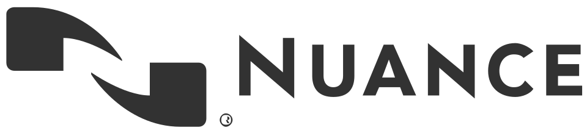

뉘앙스 커뮤니케이션즈 Nuance Communications
뉘앙스 커뮤니케이션즈(Nuance Communications)는 미국의 음성 인식 엔진 개발 회사이다. 시리의 음성 인식 엔진을 공급하는 것으로 유명하며, 본사는 Burlington에 있다.
최종 업데이트

뉘앙스 커뮤니케이션즈는 어떤 브랜드인가
이 회사는 1992년에 설립된 미국의 음성 인식 엔진 개발 회사로, 본사는 Burlington에 있고 모기업은 마이크로소프트이다. 시리의 음성 인식 엔진을 공급하는 회사로 유명하다.
2010년에는 구글이 세계 1위인 이 회사의 기술로 음성검색 서비스를 제공했다. 이 회사의 제품은 단순한 음성인식을 넘어 자연 언어를 인식해 구문을 텍스트로 전환할 수 있다.
한국에서는 2000년에 한국지사인 뉘앙스 커뮤니케이션즈 코리아가 설립되었고, 2007년에 처음으로 한국어 딕테이션 프로젝트를 시작했다. 2011년에는 드래곤 딕테이션과 드래곤 서치를 애플 앱스토어를 통해 한국에 정식으로 서비스한다고 발표했다.
뉘앙스 커뮤니케이션즈는 어떻게 시작되고 성장했나
이 회사는 1992년 미국에서 설립되었다. 음성인식 기술이 PC에 적용된 최초의 사례는 1980년대 초 드래곤 시스템(Dragon Systems)이 개발한 도스용 프로그램 드래곤 딕테이트(DragonDictate)이다.
2000년에는 한국지사인 뉘앙스 커뮤니케이션즈 코리아가 설립되었으며, 2007년에 처음으로 한국어 딕테이션 프로젝트를 시작했다. 2010년 구글은 세계 1위인 이 회사의 기술로 음성검색 서비스를 제공했다.
이 회사의 제품은 음성인식을 넘어 자연 언어를 인식해 구문을 텍스트로 전환할 수 있다.
뉘앙스 커뮤니케이션즈의 브랜드 아이덴티티는 무엇인가
시리의 음성 인식 엔진을 공급하는 것으로 유명한 음성 인식 전문 회사이다. 음성인식을 넘어 자연 언어를 인식해 구문을 텍스트로 전환하는 기술을 제공한다.
뉘앙스 커뮤니케이션즈의 대표 제품과 서비스는 무엇인가
2011년 5월 1일 이 회사는 드래곤 딕테이션과 드래곤 서치를 애플 앱스토어를 통해 한국에 정식으로 서비스한다고 발표했다. 드래곤 딕테이션은 한국어 받아쓰기 앱으로, 열 문장 가까이를 쉬지 않고 말하면 90% 가까운 정확도로 말이 장문의 문자로 표시된다.
2011년 6월 13일에는 드래곤 네이처널리스피킹 11.5를 출시했다. 이 버전은 홈(99.99달러), 프리미엄(199.99달러), 프로페셔널(599.99달러), 리갈(799.99달러)로 판매된다.
시리의 음성 인식 엔진도 이 회사가 공급한다.
뉘앙스 커뮤니케이션즈는 지금 어떤 상태인가
현재 모기업은 마이크로소프트이며, 본사는 미국의 Burlington에 있다. 1992년에 설립되었으며, 시리의 음성 인식 엔진을 공급하는 것으로 유명하다.
음성인식을 넘어 자연 언어를 인식해 구문을 텍스트로 전환하는 제품을 제공한다. 구글이 2010년 음성검색 서비스에 이 회사의 기술을 사용한 사례도 있다.
뉘앙스 커뮤니케이션즈 로고는 어떻게 변해왔나
자주 묻는 질문
뉘앙스 커뮤니케이션즈는 어느 나라 브랜드인가요?
뉘앙스 커뮤니케이션즈는 미국의 AI·인공지능 브랜드입니다.
뉘앙스 커뮤니케이션즈는 언제 설립되었나요?
뉘앙스 커뮤니케이션즈는 1992년 설립되었습니다.
뉘앙스 커뮤니케이션즈의 브랜드 아이덴티티는 무엇인가요?
시리의 음성 인식 엔진을 공급하는 것으로 유명한 음성 인식 전문 회사이다.
뉘앙스 커뮤니케이션즈의 대표 제품은 무엇인가요?
2011년 5월 1일 이 회사는 드래곤 딕테이션과 드래곤 서치를 애플 앱스토어를 통해 한국에 정식으로 서비스한다고 발표했다.
뉘앙스 커뮤니케이션즈는 어느 기업이 소유하고 있나요?
현재 모기업은 마이크로소프트이며, 본사는 미국의 Burlington에 있다.
뉘앙스 커뮤니케이션즈의 본사는 어디에 있나요?
뉘앙스 커뮤니케이션즈의 본사는 Burlington에 있습니다(위키데이터 기준).
뉘앙스 커뮤니케이션즈의 공식 웹사이트는 어디인가요?
뉘앙스 커뮤니케이션즈의 공식 웹사이트는 http://www.nuance.com/ 입니다.
출처와 검증
뉘앙스 커뮤니케이션즈 관련 참고: 공식 웹사이트 · 위키데이터 Q1137289 · 한국어 위키백과 · 영어 위키백과. 브랜드명은 한글과 원어를 함께 표기하되 데이터에 없는 표기는 만들지 않습니다. 기원 국가·설립연도는 검수된 정의문에서 확인된 값을 우선하고, 없을 때만 공식 웹사이트 URL이 일치하는 위키데이터 개체의 값을 씁니다. 위키데이터 값은 2026-11-14 기준입니다.